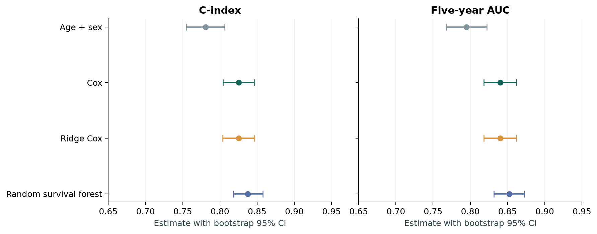
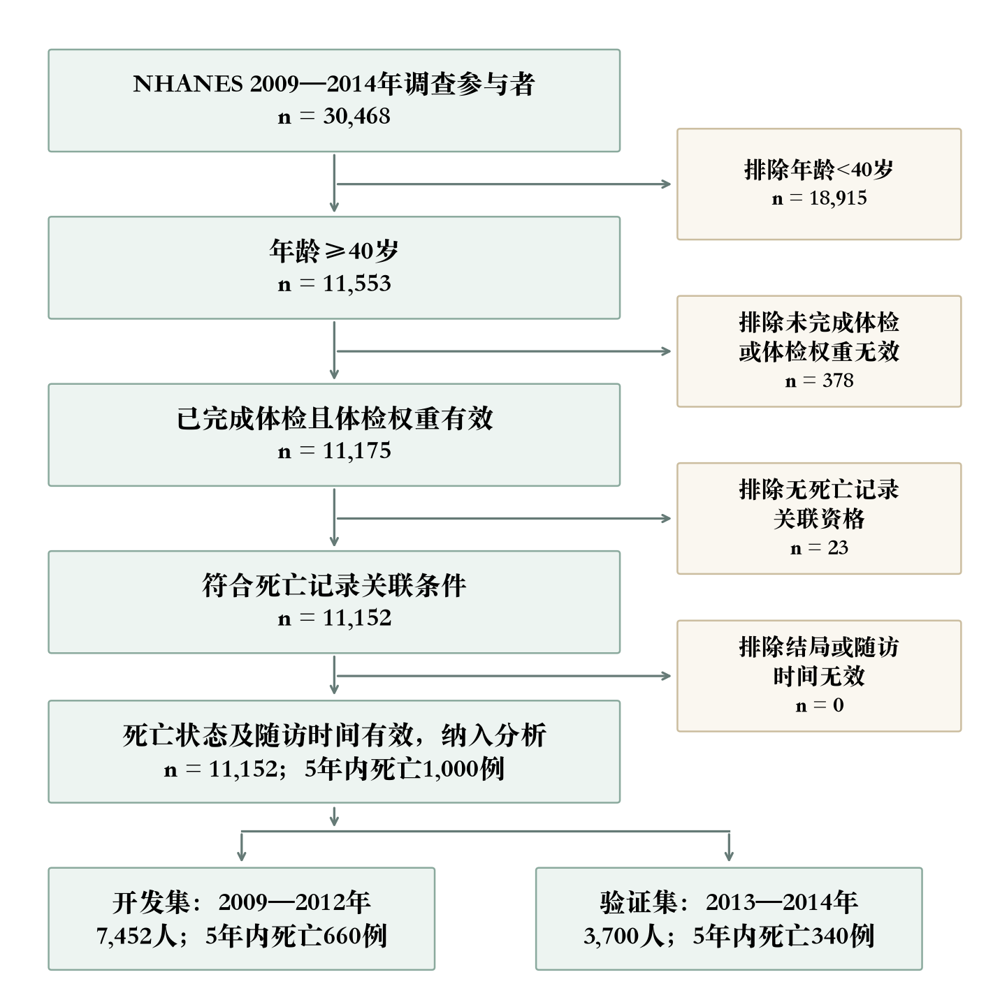

COX PROPORTIONAL HAZARDS MODEL
5年全因死亡风险计算
填写基线指标，估计体检后60个月内的累积死亡概率。
当前模型：Cox回归
适用人群 美国NHANES中40岁及以上参与者预测窗口 5年（60个月）输入 13项基线指标
指标输入
* 为必填项；其余可留空，使用开发集插补值。
MODEL VALIDATION
研究结果
模型在2013—2014年独立留出样本中的内部验证表现。
纳入样本11,152人
5年内死亡事件1,000例
开发集 / 验证集7,452 / 3,700
验证集死亡事件340例
模型性能比较
各模型采用相同的预测窗口；括号内为95%置信区间。
| 模型 | C-index ↑ | 5年AUC ↑ | 5年Brier ↓ |
|---|---|---|---|
| 正在加载结果… | |||
区分度和校准需要共同评价。Bootstrap区间以已训练模型为条件；模型间点估计差异未作正式统计检验。
结果图示
验证集C-index和5年AUC及95%置信区间。

C-index和AUC越高，区分能力越好。
点击图片查看原图 ↗STUDY & MODEL INFORMATION
方法与使用说明
了解模型的来源、输入处理方式与适用范围。
研究设计
- 数据来源
- NHANES 2009—2014年三个调查周期，关联随访截至2019年底的公开死亡数据。
- 研究对象
- 年龄≥40岁、完成体检且死亡随访有效的参与者。
- 数据划分
- 2009—2012年用于开发；2013—2014年用于按调查周期划分的内部验证。
- 结局定义
- 体检后60个月内全因死亡。观察不足60个月且未死亡者按实际时间删失。
查看人群筛选流程

输入与计算
- 必填信息
- 年龄与性别。年龄80岁及以上统一填写80；收入贫困比≥5统一填写5。
- 缺失指标
- 连续变量使用开发集中位数，分类变量使用开发集众数插补。结果中会列出采用插补的项目。
- 化验单位
- 白蛋白支持g/dL与g/L，肌酐支持mg/dL与μmol/L。切换单位时，已填数值会同步换算。
- 范围检查
- 数值需位于模型开发数据的观测范围。每项下方显示当前单位对应的范围。
- 计算模型
- 采用常规Cox模型及其60个月基线生存率，前处理参数与Python实现一致。
评价与解读
区分度
C-index和时间依赖AUC用于描述模型区分较高与较低风险参与者的能力。
预测误差与校准
Brier评分越低，整体误差越小。校准图比较预测概率与观察风险；随机生存森林最高风险组存在风险低估的可能。
适用范围
模型基于美国NHANES样本，尚未在中国人群或独立外部队列验证。研究设计与输入处理方式见本页说明。